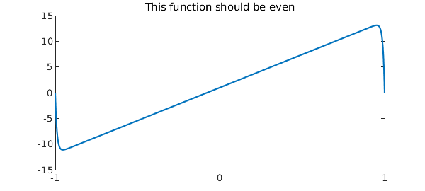
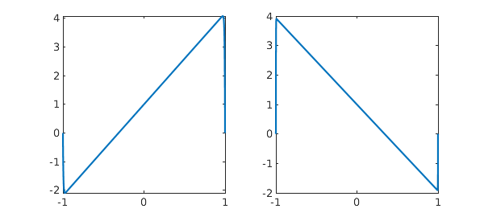
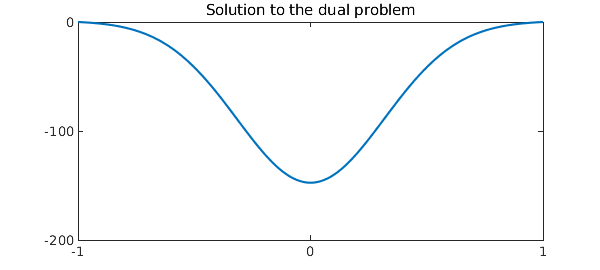

1. Near-nonuniqueness for a linear ODE BVP
The linear problem $$ Lu = \epsilon u"- xu'+ u = 1, \quad u(\pm 1) = 0 , ~\epsilon \ll 1 $$ has a unique solution. From uniqueness, it follows that the solution must be an even function of $x$, for if it were not, then $u(-x)$ would be another distinct solution.
So what is going on here when we solve the problem with Chebfun with $\epsilon = 0.01$?
L = chebop(-1,1); L.lbc = 0; L.rbc = 0;
L.op = @(x,u) 0.01*diff(u,2) - x*diff(u) + u;
LW = 'linewidth'; FS = 'fontsize';
u = L\1; plot(u,LW,4), set(gca,'xtick',-1:1)
title('This function should be even',FS,12)

A clue comes when we look at the residual for the computed solution. It is very small, indicating that in some sense the computation was successful:
residual_norm = norm(L*u - 1)
residual_norm =
1.875672952705472e-09
In the language familiar in the study of pseudospectra [5,6] we could say that although $u$ is not near a solution, it is nearly a solution. Domokos and Holmes would call it a ghost solution [2].
Here are similar pictures with $\epsilon = 0.005$ and $0.001$. The residuals are small and the precise shape of each "solution" is determined by arbitrary features of the Chebfun discretization that might as well be random.
L.op = @(x,u) 0.005*diff(u,2) - x*diff(u) + u; u = L\1; subplot(1,2,1), plot(u,LW,2), set(gca,'xtick',-1:1) L.op = @(x,u) 0.001*diff(u,2) - x*diff(u) + u; u = L\1; subplot(1,2,2), plot(u,LW,2), set(gca,'xtick',-1:1)

What's going on is that although $L$ does not have any null functions, i.e., eigenfunctions associated with eigenvalue $0$, it has one that comes very close, as we can see by computing six eigenvalues for the case $\epsilon = 0.01$ again:
L.op = @(x,u) .01*diff(u,2) - x*diff(u) + u; eigs(L)
ans = -4.000000000893855 -2.999999998652914 -2.000000000108242 -1.000000000110286 -0.000000000000946 1.000000000001899
If we plot the near-null function we see the shape of the upside-down N:
[v,d] = eigs(L,1,'SM');
clf, plot(v,'m',LW,2), set(gca,'xtick',-1:1), title('null function',FS,10)
We can explain this effect as follows. An ODE BVP will have a null function if there are too few boundary conditions, which would be analogous to a matrix problem having more columns than rows: $$ \pmatrix{a & b} \pmatrix{x \cr y} = c. $$ In the language of Fredholm operators, a problem with this shape is said to have index 1 (the dimension of the nullspace exceeds the codimension of the range by 1) [1]. Now mathematically, our ODE is of index 0, with the right number of boundary conditions, namely 2, i.e., 1 at each end. However, consider its behavior near each boundary $x=\pm 1$, taking $\epsilon = 0.01$ for concreteness. At $x=-1$, $L$ has these characteristic values $\alpha$ for solutions $\exp(\alpha x)$ apart from boundary conditions:
roots([.01 1 1])
ans = -98.989794855663561 -1.010205144336438
Similarly at $x=1$, $L$ the characteristic values are these:
roots([.01 -1 1])
ans = 98.989794855663561 1.010205144336438
At both ends we have a mode decaying away from the boundary at a very rapid exponential rate, and this exponential decoupling of the boundaries allows the pseudo-null function. Our ODE BVP, though mathematically well-posed, is numerically ill-posed/underdetermined: there is one BC at each end, whereas the ODE is exponentially close to being able to satisfy two BCs at each end.
2. Near-nonexistence for the dual problem
Students of the Fredholm alternative know that in some sense existence is the dual of uniqueness. Here is the adjoint of our earlier problem: $$ L^*u = \epsilon u" +xu'+ u = 1, \quad u(\pm 1) = 0 , ~\epsilon \ll 1. $$ Again there exists a unique solution mathematically, but for small $\epsilon$, can we see an effect of near-nonexistence?
An experiment gives an answer: the solutions are exponentially large. Here we take the large value $\epsilon = 0.1$:
L = chebop(-1,1); L.lbc = 0; L.rbc = 0;
L.op = @(x,u) 0.1*diff(u,2) + x*diff(u) + u;
u = L\1; plot(u,LW,2), set(gca,'xtick',-1:1)
ylim([-200 0]), set(gca,'ytick',-200:100:0)
title('Solution to the dual problem',FS,10)

As we shrink $\epsilon$, the amplitude grows exponentially.
L.op = @(x,u) 0.05*diff(u,2) + x*diff(u) + u; u = L\1; subplot(1,2,1), plot(u,LW,2), set(gca,'xtick',-1:1) ylim([-3e4 0]) L.op = @(x,u) 0.025*diff(u,2) + x*diff(u) + u; u = L\1; subplot(1,2,2), plot(u,LW,2), set(gca,'xtick',-1:1) ylim([-6e8 0])
We can explain this dual effect as follows. An ODE BVP will fail to have a solution if there are too many boundary conditions, which would be analogous to a matrix problem having more rows than columns: $$ \pmatrix{a \cr b} x = \pmatrix{c\cr d}. $$ In the language of Fredholm operators, a problem with this shape has index $-1$ (the codimension of the range exceeds the dimension of the nullspace by 1) [1]. Near $x=-1$, with $\epsilon = 0.01$ for concreteness, our dual operator $L^*$ has these characteristic values $\alpha$,
roots([.01 -1 1])
ans = 98.989794855663561 1.010205144336438
and at $x=1$ the values are
roots([.01 1 1])
ans = -98.989794855663561 -1.010205144336438
Now at both boundaries we have solutions exponentially growing away from the boundary, as one would see on an infinite interval in a problem where no boundary conditions could be specified there. Thus the dual ODE BVP is numerically ill-posed/overdetermined.
3. Nonexistence of solutions for linear PDEs
For ODEs, we have seen that a problem may have solutions that are "nearly nonunique" or "nearly do not exist", with a measure of "nearly" growing exponentially as a parameter $\epsilon$ decreases to $0$. With PDEs, there are similar effects but we no longer need an adjustable parameter. The reason is that a PDE has at least two independent variables, such as $x$ and $y$ or $x$ and $t$, and thus it must simultaneously comprehend all possible wave numbers $k$ (for a dependence like $\exp(iky)$, say) or all possible frequencies $\omega$ (for a dependence $\exp(i\omega t)$).
This is the mechanism that leads to nonexistence of solutions to certain linear PDEs with smooth coefficients, famously discovered by Hans Lewy in 1957 [4], a phenomenon later analyzed very fully by Hormander, Dencker, and others. Nonexistence for one problem is associated with nonuniqueness for the dual problem, which in turn has to do with the appearance of null functions in the form of Gaussian wave packets. See chapter 13 of [6].
One can see related issues of linear PDE ill-posedness in a context closer to the ODEs of this Example in the work of Fokas and Pelloni [3]. We have seen in this memo that the number of boundary conditions needed at a boundary point of an ODE comes exponentially close to being determined by the characteristic exponents $\alpha$ at that boundary. For a PDE, it is not just a matter of coming exponentially close; one must get the count right at each boundary point or the problem will be truly ill-posed.
4. References
-
J. L. Aurentz and L. N. Trefethen, Block operators and spectral discretizations, SIAM Review, to appear.
-
G. Domokos and P. Holmes, On nonlinear boundary-value problems: ghosts, parasites and discretizations, Proc. Roy. Soc. Lond. A 459 (2003), 1535-1561.
-
A. S. Fokas and B. Pelloni, Two-point boundary value problems for linear evolution equations, Math. Proc. Camb. Phil. Soc. 131 (2001), 521-543.
-
H Lewy, An example of a smooth linear partial differential equation without solution, Ann. Math. 66 (19757), 155-158.
-
L. N. Trefethen, Wave packet pseudomodes of variable coefficient differential operators, Proc. Roy. Soc. Lond. A 461 (2005), 3099-3122.
-
L. N. Trefethen and M. Embree, Spectra and Pseudospectra, Princeton U. Press, 2005.